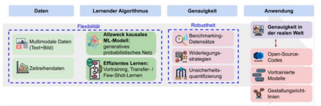
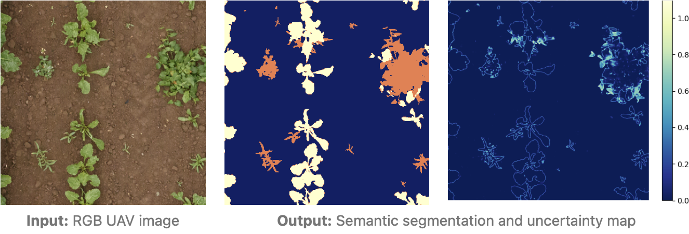
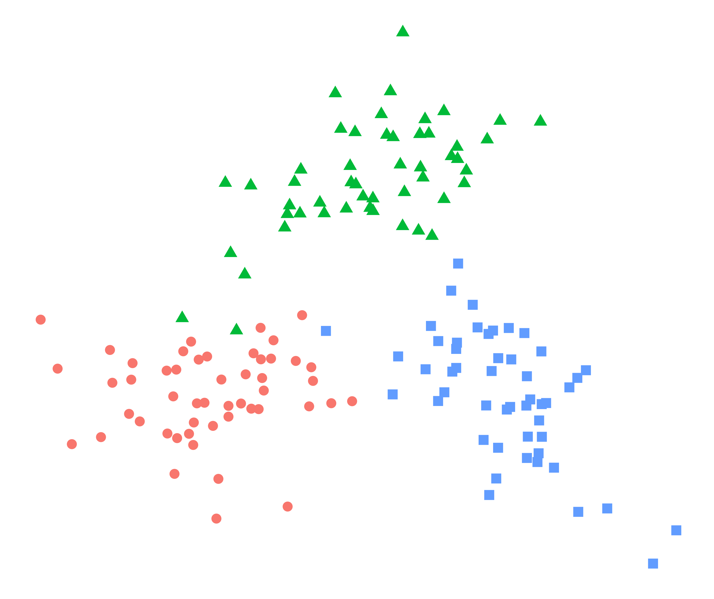
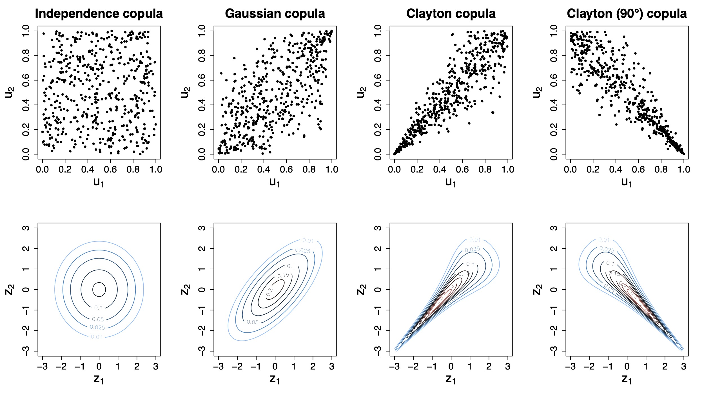
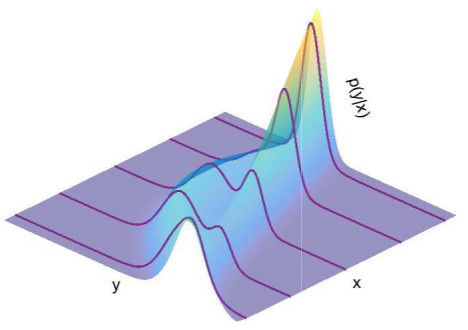

- Methods for Big Data
Research
Ongoing Third-Party Research Projects
Prof. Klein is principal investigator (PI) in the following research projects.
-
The project aims to reconstruct spatial patterns of timescale-dependent climate variability. For that a Bayesian Hierarchical Model will be developed that incorporates a variety of proxy data while considering proxy processes and noise. It aims to quantify limitations and uncertainties of derived climate variability reconstructions related to the covariance structure used and the sparseness, spatial heterogeneity and noisiness of the observational data through Bayesian posterior distributions. We will use the climate variability map to investigate regional patterns of low-frequency variability and the corresponding implications e.g. for the range of possible future climate trends in natural variability and of the frequency of extreme events.
The project is supported by Helmholtz Einstein International Berlin Research School in Data Science (HEIBRiDS) and co-supervised by Prof. Dr. Thomas Laepple from Alfred Wegener Institute (AWI) and Prof. Dr. Tobias Krüger from the Humboldt University.
Funded by:

-
DFG project Distributional Copula Regression for Space-Time Data (jointly with Holger Dette, Ruhr-Universität Bochum)
(since 2024, subproject of TRR 391: Spatio-temporal Statistics for the Transition of Energy and Transport)Distributional copula regression for space-time data develops novel models for multivariate spatio-temporal data using distributional copula regression. Of particular interest are tests for the significance of predictors and automatic variable selection using Bayesian selection priors. In the long run, the project will consider computationally efficient modeling of non-stationary dependencies using stochastic partial differential equations.

-
Existing machine learning (ML) models typically on correlation, but not causation. This can lead to errors, bias, and eventually suboptimal performance. To address this, we aim to develop novel ways to integrate causality into ML models. In the project CausalNet, we advance causal ML toward flexibility, efficiency, and robustness:
(1) Flexibility: We develop a general-purpose causal ML model for high-dimensional, timeseries, and multi-modal data.
(2) Efficiency: We develop techniques for efficient learning algorithms (e.g., synthetic pre-training, transfer learning, and few-shot learning) that are carefully tailored to causal ML.
(3) Robustness: We create new environments/datasets for benchmarking. We also develop new techniques for verifying and improving the robustness of causal ML.
(4) Open-source: We fill white spots in the causal ML toolchain to improve industry uptake.
(5) Real-world applications: We demonstrate performance gains through causal ML in business, public policy, and bioinformatics for scientific discovery.
 -
DFG Research Unit Fusing Deep Learning and Statistics towards Understanding Structured Biomedical Data
(since 2023)Sub-Project P5: Structured explainability for interactions in deep learning models applied to pathogen phenotype prediction
Explaining and understanding the underlying interactions of genomic regions are crucial for proper pathogen phenotype characterization such as predicting the virulence of an organism or the resistance to drugs. Existing methods for classifying the underlying large-scale data of genome sequences face challenges with regard to explainability due to the high dimensionality of data, making it difficult to visualize, access and justify classification decisions. This is particularly the case in the presence of interactions, such as of genomic regions. To address these challenges, we will develop methods for variable selection and structured explainability that capture the interactions of important input variables: More specifically, we address these challenges (i) within a deep mixed models framework for binary outcomes fusing generalized linear mixed models and a deep variant of structured predictors. We thereby combine statistical logistic regression models with deep learning for disentangling complex interactions in genomic data. We particularly enable estimation when no explicitly formulated inputs are available for the models, as for instance relevant with genomics data. Further, (ii), we will extend methods for explainability of classification decisions such as layerwise relevance propagation to explain these interactions. Investigating these two complementary approaches on both the model and explainability levels, it is our main objective to formulate and postulate structured explanations that not only give first-order, single variable explanations of classification decisions, but also regard their interactions. While our methods are motivated by our genomic data, they can be useful and extended to other application areas in which interactions are of interest.Sub-Project P6: Probabilistic learning approaches for complex disease progression based on high-dimensional MRI data
This project proposes informed, data-driven methods to reveal pathological trajectories based on high-dimensional medical data obtained from magnetic resonance imaging (MRI), which are relevant as both inputs and outputs in regression equations to adequately perform early diagnosis and to model, understand, and predict actual and future disease progression. For this, we will fuse deep learning (DL) methods with Bayesian statistics to (1) accurately predict the complete outcome distributions of individual patients based on MRI data and further confounders and covariates (such as clinical or demographical variables) to adequately quantify uncertainty in predictions in contrast to point predictions not delivering any measures of confidence (2) model temporal dynamics in biomedical patient data. Regarding (1), we will develop deep distributional regression models for image inputs to accurately predict the entire distributions of the different disease scores (e.g. symptom severity), which can be multivariate and are typically highly non-normally distributed. Regarding (2), we will model the complex temporal evolution in neurological diseases by developing DL-based state-space models. Neither model is tailored to a specific disease, but both will be exemplary developed and tested for two neurological diseases, namely Alzheimer’s disease (AD) and multiple sclerosis (MS), chosen for their different disease progression profiles. -
Bayesian Machine Learning with Uncertainty Quantification for Detecting Weeds in Crop Lands from Low Altitude Remote Sensing
(since 2022)Weeds are one of the major contributors to crop yield loss. As a result, farmers deploy various approaches to manage and control weed growth in their agricultural fields, most common being chemical herbicides. However, the herbicides are often applied uniformly to the entire field, which has negative environmental and financial impacts. Site-specific weed management (SSWM) considers the variability in the field and localizes the treatment. Accurate localization of weeds is the first step for SSWM. Moreover, information on the prediction confidence is crucial to deploy methods in real-world applications. This project aims to develop methods for weed identification in croplands from low-altitude UAV remote sensing imagery and uncertainty quantification using Bayesian machine learning, in order to develop a holistic approach for SSWM.
The project is supported by Helmholtz Einstein International Berlin Research School in Data Science (HEIBRiDS) and co-supervised by Prof. Dr. Martin Herold from GFZ German Research Centre for Geosciences.
Funded by:
 -
Despite significant overlap and synergy, machine learning and statistical science have developed largely in parallel. Deep Gaussian mixture models, a recently introduced model class in machine learning, are concerned with the unsupervised tasks of density estimation and high-dimensional clustering used for pattern recognition in many applied areas. In order to avoid over-parameterized solutions, dimension reduction by factor models can be applied at each layer of the architecture. However, the choice of architectures can be interpreted as a Bayesian model choice problem, meaning that every possible model satisfying the constraints is then fitted. The authors propose a much simpler approach: Only one large model needs to be trained and unnecessary components will empty out. The idea that parameters can be assigned prior distributions is highly unorthodox but extremely simple bringing together two sciences, namely machine learning and Bayesian statistics.
Funded by:
 -
Traditional regression models often provide an overly simplistic view on complex associations and relationships to contemporary data problems in the area of biomedicine. In particular, capturing relevant associations between multiple clinical endpoints correctly is of high relevance to avoid model misspecifications, which can lead to biased results and even wrong or misleading conclusions and treatments. As such, methodological development of statistical methods tailored for such problems in biomedicine are of considerable interest. It is the aim of this project to develop novel conditional copula regression models for high-dimensional biomedical data structures by bringing together efficient statistical learning tools for high-dimensional data and established methods from economics for multivariate data structures that allow to capture complex dependence structuresbetween variables. These methods will allow us to model the entire joint distribution of multiple endpoints simultaneously and to automatically determine the relevant influential covariates and risk factors via algorithms originally proposed in the area of statistical and machine learning. The resulting models can then be used both for the interpretation and analysis of complex association-structures as well as for prediction inference (simultaneous prediction intervals for multiple endpoints). Additional implementation in open software and its application in various studies highlight the potentials of this project’s methodological developments in the area of digital medicine.
 -
Emmy Noether Research Group (DFG) Regression Models Beyond the Mean - A Bayesian Approach to Machine Learning
(since 2019)Recent progress in computer science has led to data structures of increasing size, detail and complexity in many scientific studies. In particular nowadays, where such big data applications do not only allow but also require more flexibility to overcome modelling restrictions that may result in model misspecification and biased inference, further insight in more accurate models and appropriate inferential methods is of enormous importance. This research group will therefore develop statistical tools for both univariate and multivariate regression models that are interpretable and that can be estimated extremely fast and accurate. Specifically, we aim to develop probabilistic approaches to recent innovations in machine learning in order to estimate models for huge data sets. To obtain more accurate regression models for the entire distribution we construct new distributional models that can be used for both univariate and multivariate responses. In all models we will address the issues of shrinkage and automatic variable selection to cope with a huge number of predictors, and the possibility to capture any type of covariate effect. This proposal also includes software development as well as applications in natural and social sciences (such as income distributions, marketing, weather forecasting, chronic diseases and others), highlighting its potential to successfully contribute to important facets in modern statistics and data science.
